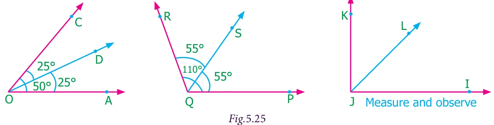
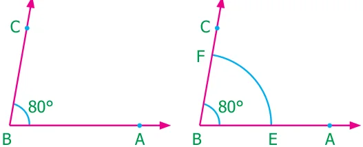
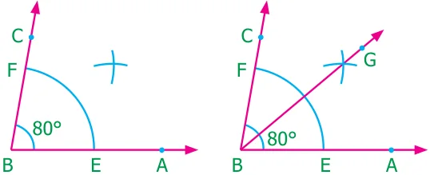

Exercise 5.3
- Draw a line segment of given length and construct a perpendicular bisector to each line segment using scale and compass.
(a) 8 cm (b) 7cm (c) 5.6 cm (d) 10.4 cm (e) 58 mm
5.4.2 Construction of angle bisector of an angle.
If a line or line segment divides an angle into two equal angles, then the line or line segment is called angle bisector of the given angle.
In the following figures we can observe some angle bisectors.

Example 5.12 Construct bisector of the \(\angle ABC\) with the measure \(80^{\circ}\).
Step 1: Draw the given angle \(\angle ABC\) with the measure \(80^{\circ}\) using protractor.

Step 2: With \(B\) as center and convenient radius, draw an arc to cut \(BA\) and \(BC\). Mark the points of intersection as \(E\) on \(BA\) and F on \(BC\).
Step 3: With the same radius and \(E\) as center, draw an arc in the interior of \(\angle ABC\) and another arc of same measure with center at \(F\) to cut the previous arc.

Step 4: Mark the point of intersection as \(G\). Draw a ray \(BX\) through \(G\).
\(BG\) is the required bisector of the given angle \(\angle ABC\)